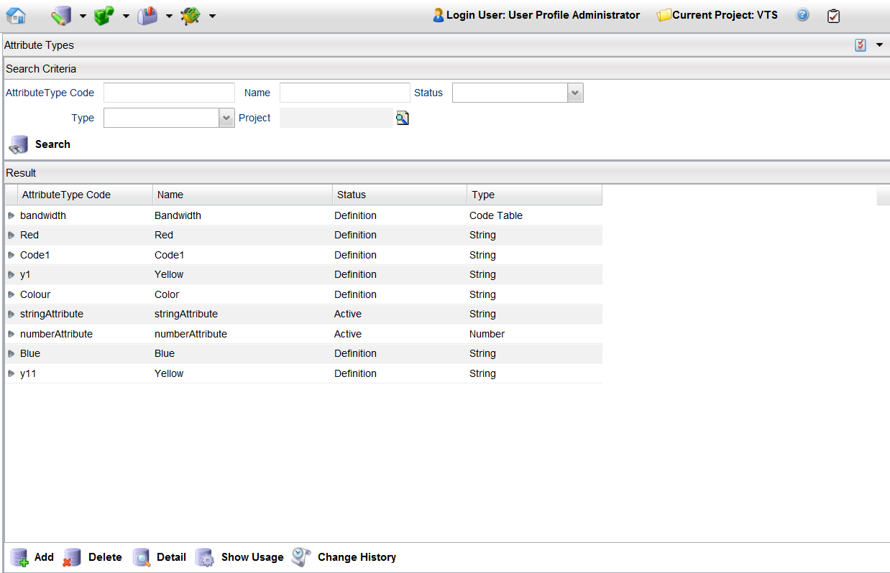
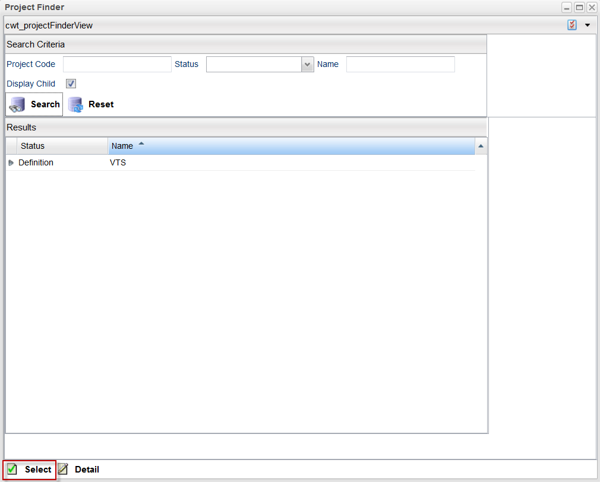

Search for an Attribute Type
You can search for attribute types using a number of search criteria, such as by type, status, or name. You can also search for attribute types associated with projects in Catalog Designer or attribute types related to a specific project.
Note: A project must be opened to search for an attribute type.
To search for an attribute from all projects available in the Catalog Designer, follow these steps:
- From the menu bar, click Designer > Attribute Types to launch the Attribute Types - Search Criteria page.
- Specify your search criteria. The following fields are available:
| Field |
Description |
| Attribute Type Code |
This field denotes the code that is used to identify the attribute type. |
| Name |
This field indicates a unique name for the attribute. |
| Status |
This field denotes a list of available statuses for the attribute (for example, Definition and Active). |
| Type |
This field denotes the data type of attribute. Click the drop-down menu and select one of the types from the list. |
| Project |
This field indicates with which project the attribute type is associated. |
- When you have finished entering your search criteria, click the Search button. All attributes from all projects display in the Result pane.

Search for an Attribute from a Project
To search for an attribute from a particular project, follow these steps:
- From the menu bar, click Designer > Attribute Types to launch the Attribute Types - Search Criteria page.
- Click the Finder button () to launch the Project Finder page.
- Enter your search criteria (for example, click the Status field's drop-down menu and select a value), and then click the Search button.
- Your results appear in the Results pane.

- Either click the Select button or double-click the project in the Results pane.
- To view a project's details, select the project from the search results, and then click the Detail button.
- To reset the search criteria, click the Reset button.
- Follow the steps 2 and 3 from the Search All Attributes section to search for all attributes associated with the selected project.
|